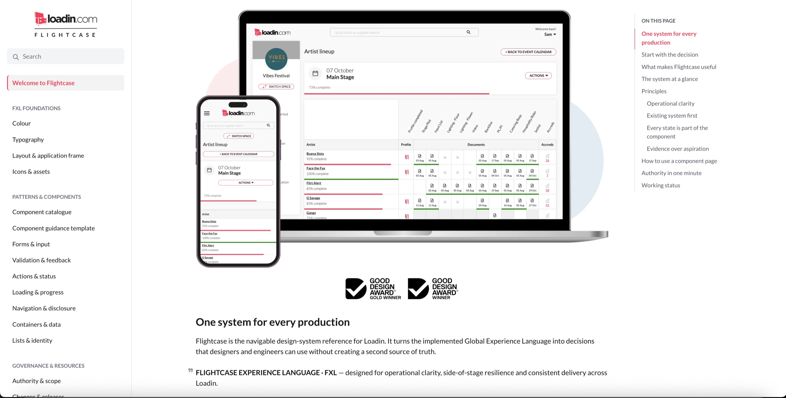
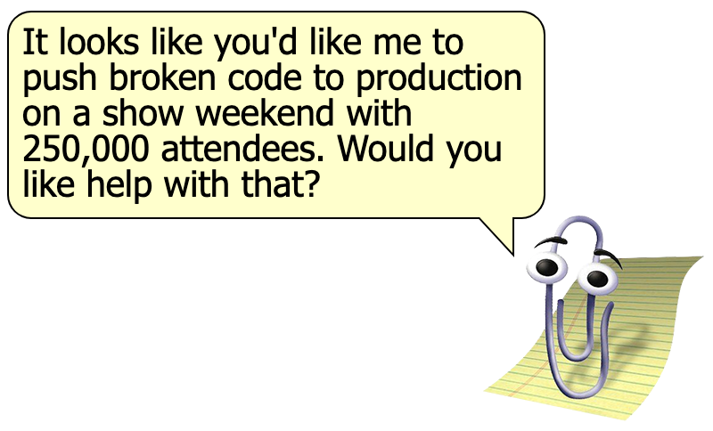
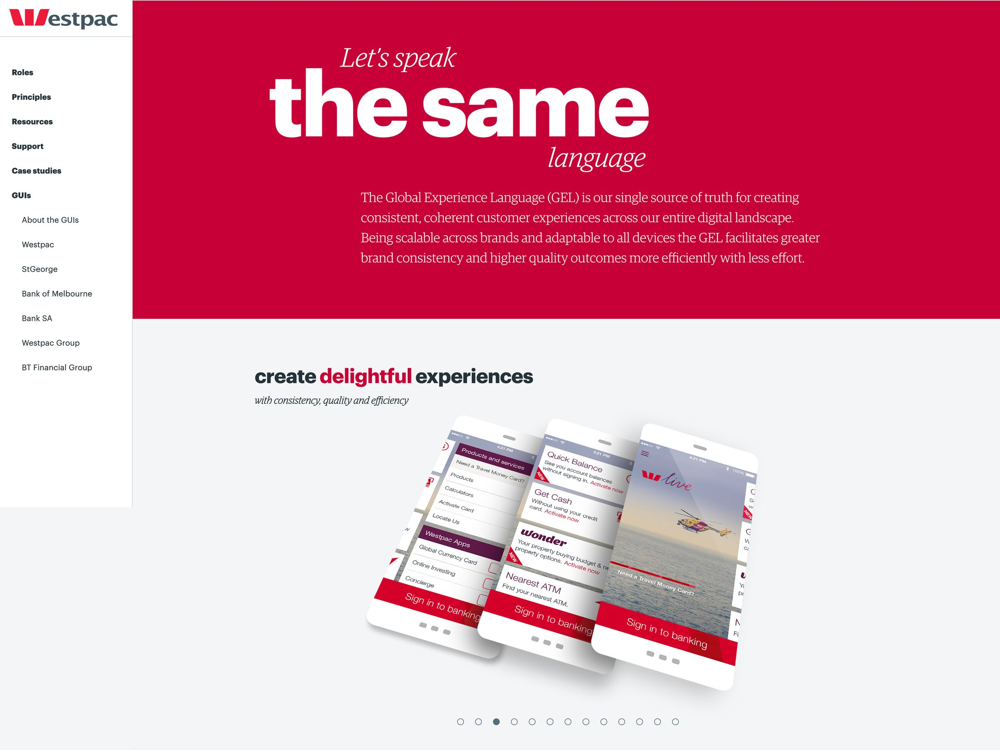
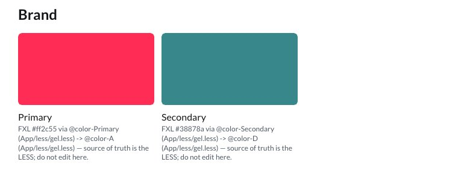
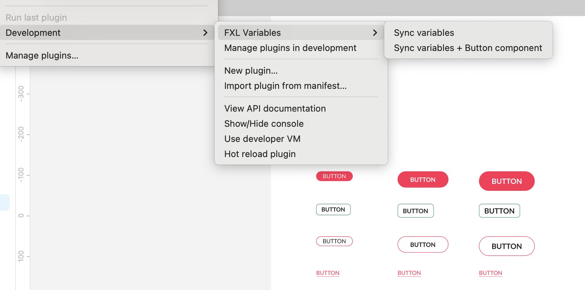
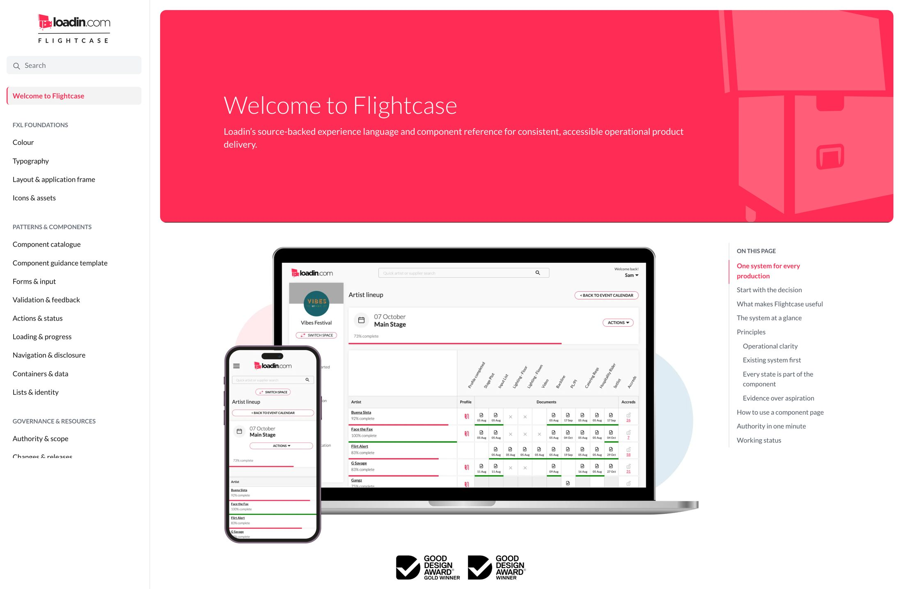

Governing a design system when the audience is a machine.
The interesting problem was not the tokens
Loadin runs on a design system I first had involvement with in 2014. Westpac were pioneers in this space and one of the first commercial enterprises to fully open source their codebase. But it's had 8 years of design and tech debt, and in mid 2026 I started fixing it.
That last detail is the reason this is worth a case study. The interesting problem was not the tokens (the design variety). It was working out what stops an agent from quietly making things worse at a speed no human review can keep up with, something I had more experience of that than a person should ever be subjected to.
Keeping Claude and Codex honest
My relationship with Augmented Intelligence has been, well - complicated. When it is good, it is mind-blowingly good. And when it is bad I am not lying when I say that Clippy would do a better job, mainly because it at least tells you that it is about to do something. The current models are optimised on pleasing and cadence, and if the user is happy and impressed with the amount being done, it's doing it's job.
Where it goes wrong is when an expert user challenges the model, finds out that it's been cutting corners or not following rules, and it goes into appeasement mode, and just loses all of it's superpowers and makes elementary mistakes every single turn. It's fascinating that both Anthropic and OpenAI models follow exactly the same pattern, and they have both admitted this on record with me to be the case.

So with this in mind, the only way to responsibly use AI for fast cadence on mission critical platforms is to automate as much of the checking of the work as possible, not just whether it works, but whether it follows conventions like column layouts, button hierarchy, or ways to move things up and down in a list. For this, the only way to do that is to have a detailed experience language that it can reference as the exemplar. Usually you build design systems for humans to adhere to - in my case it was almost exclusively for agentic AI.
After a lot of frustration with 'appeasement mode' we built out an overall governance engine - The Oracle. This is a series of front and back end gates that must be proven before code will be committed to the repo. It also requires an independent adversarial review by another LLM. This has swung between Claude and Codex for which role is done by who, and the Oracle is LLM independent, it is a set of rules that can be followed by any provider.
Staring into eight years of debt
I did have a rudimentary GEL library of my own - there's an earlier case study on just this - however it was dated, limited and contradictory in places. I needed to modernise and in the process stare into the 8-odd years of debt I had accumulated on the loadin journey. I'm honestly impressed how much stood the test of time, but design tokens weren't a thing back then, so it was time for a complete review of where the experience language was at.
Brand slots from a bank, ten years of design system evolution
GEL’s colours are named @color-A through @color-Q.
That looks like laziness until you know where it came from. They are brand slots
from the Westpac multibrand system that carried not only Westpac but St George, Bank SA and Bank of
Melbourne amongst others, deliberately not named by hue so a subbrand could refill them.
The Westpac GEL was also one of the first design systems in the world to be released as open source — which is why building on it was the obvious call given my involvement in it - I knew it from the inside: in its early days I sat on the GEL-X governance board, recommending candidates for inclusion into the main GEL.
Although a lot stands the test of time, 8 years of POC to global adoption will always have it's debt to pay: 1,558 inline margin attributes, two competing spacing scales (869 declarations on the six-multiple scale GEL documents, 389 on Bootstrap 3’s five-multiple base), and five type sizes crammed inside four pixels.
I also knew at the outset that loadin was going to very likely be multi-brand eventually, and more on that soon hopefully, but this was systems thinking at the very earliest part of the journey. So much I did in year one is now paying dividends eight years later.

Three rules, written before any work started
gel.less is frozenflightcase.less, which is imported after it, so redefining a variable there re-skins every existing use through lazy evaluation without touching the frozen file. Every improvement becomes a deliberate, reviewable diff against a fixed baseline instead of a change buried in 2,900 lines.main.less before and after, compare the output by hash. A pure refactor must be byte-identical. Anything else must be an intentional difference with a written explanation.That third rule is the one that did the most work.
Governance that blocked its own author
The token commits swapped 54 literals that already matched the scale exactly, 28 spacing and 26 type. Compiled output: byte-identical to the parent. The refactor was provably free.
13px and 15px were left untokenised by design. They sit inside the contested 12 to 16 pixel space we had defined as problematic, and naming them would enshrine values that may yet be collapsed into their neighbours and would almost enable bad behaviour going forward.
Then I ran the work through the independent adversarial review - the verdict was it was undercooked.
The blocking finding was mine. I had bound a navigation component’s
active state directly to @color-A, a brand slot, which violates
the charter’s own rule that component rules bind to the semantic tier
and never to a slot, or theming cannot reach them. I had written the rule
eight commits earlier and broken it in the ninth.
The main reason for building it was keeping AI to account, and it found me out instead!
Three consumers, one direction
With loadin, it's a lot different to most corporate design structures I've worked in. Here, I rarely start in Figma, I mostly either wireframe / sketch and then move to prototyping in a safe sandbox. So it makes sense for this implementation that the source of truth lives in code and branches out from there. But there are always times I'm trying things in Figma before I settle on a solution to prototype.
So in this case, the source of truth will always be the LESS. It is where The Oracle starts with it's front end governance when the agent submits it's work for code review.
Figma receives the semantic tier through a plugin I built, 18
variables, each carrying its resolution chain in the description
(@color-Primary → @color-A → #ff2c55, with source files).
Brand slots are never exported. A Figma variable with no source counterpart is
reported as divergence and left untouched, never deleted.
I use Supernova for the documentation system for Flightcase, as I have at Qantas amongst other places. Supernova receives the same tokens through a sync tool I built, consuming the same payload the Figma plugin is built from so there is no delta to have to manage.

The component that turned into an instrument
I built a Figma component, Button, deriving every value from source with
line references rather than eyeballing it. Four colour variants by four
sizes, sixteen cells.
Rendering the full matrix in one view showed me something eight years of being in the weeds didn't. The teal variant is only ever square in the
product. Primary is never square. But the stylesheet permits every
combination, because the square radius and grey border come from a size
modifier, btn-md, that composes freely with any colour.
I knew that obviously because that was a design call I made, but it was never documented, and I can't expect an LLM to know all of those nuances that just live in my head.
So the stylesheet and the product disagree, and a variant matrix has to pick a side. I ruled usage over stylesheet, deleted the md column as dead vocabulary with the usage evidence attached, and rebuilt the teal cells as what teal actually is in the product, derived by computing the cascade for the real class combination.
The one-direction charter turned out to cut both ways. Figma edits never travel into the code, and a Figma-side rendering correction confers no licence to touch the stylesheets either. The rule held in a direction it was not intended for, but paid off nevertheless.

The constraints hold under pressure
Constraints hold under pressure. The gate blocked its author. Contested values stayed untokenised through four separate opportunities to name them. A dead branch was excluded from a projection rather than tidied out of a frozen file. Every one of those was cheaper to skip than to honour. That is the entire test.
The mechanisms are portable. At team scale the compile gate becomes CI, the authority order becomes codeowners and review, the stop conditions become escalation. What does not change is the underlying requirement: when a contributor can produce plausible work faster than anyone can read it, the system needs somewhere the work has to prove itself before it counts.
From cut and paste to composition
Previously, the loadin GEL was just a simple code library for me to quickly cut and paste componentry for easy re-use. Now, with agentic AI it needs to be much more atomic than that, with components made up of flexible compositions that can be constructed like lego to make consistent interfaces without building manually each time.
The more that can be automated, the less mistakes AI agents can make, and more rigorous CI gating can be enforced to give confidence in working at speed. But this will take time, and as with all good design systems, the FXL will always be a work in progress. But it is a great start and is already paying dividends with the introduction of spacer tokens, and will really hit it’s stride with the planned re-platforming to React in the near future.
